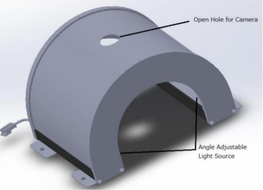
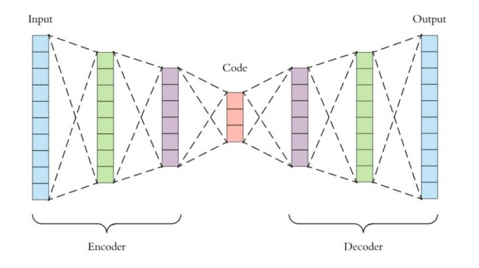

Final Year Project:
Defect Detection for Wiper Arms
At my final year of study, I was given the opportunity to develop a defect detection system for car wiper arms with the aid of an LED lighting system to enhance the quality of images captured by the system which was proposed by my supervisor. In the car wiper industry, the quality of the wipers produced is the main factor of competitiveness given there may be negative consequences from the defects present on the wiper arms to the market value. The defects inspection of wiper arms can be the solution to fulfil accurate quality checking requirement. However, there are limitations when proposing the inspection system as the system may be prone to errors due to false detections of the system. Therefore, an automated defect detection system with novel lighting is proposed to enhance the performance of the system. The novel lighting system will be evaluated. In addition, another objective for this project is to further explore numerous methods for the development of the algorithm for defect detection.
Objectives
• Setting up and implementing the dark field lighting on the defect detection system • Evaluating and reviewing different image processing techniques and development of a suitable image processing technique that will simplify the process of inspection • Evaluating and reviewing different algorithms for defects detection and determine the suitable algorithm for the classification of defects from non-defects
Methodology
Lighting System Set Up
CNN Autoencoder as the algorithm used in the defect detection
To Be Continued ...